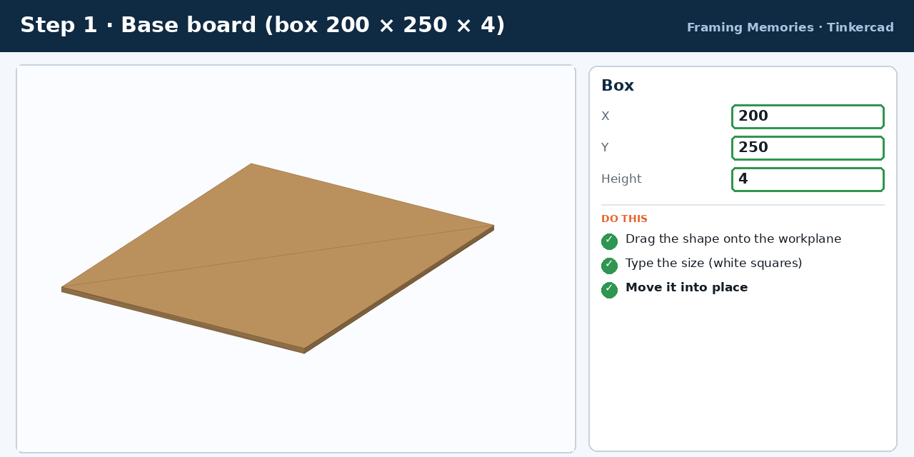
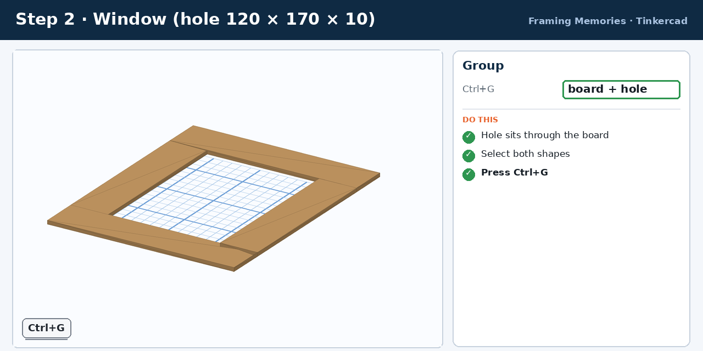
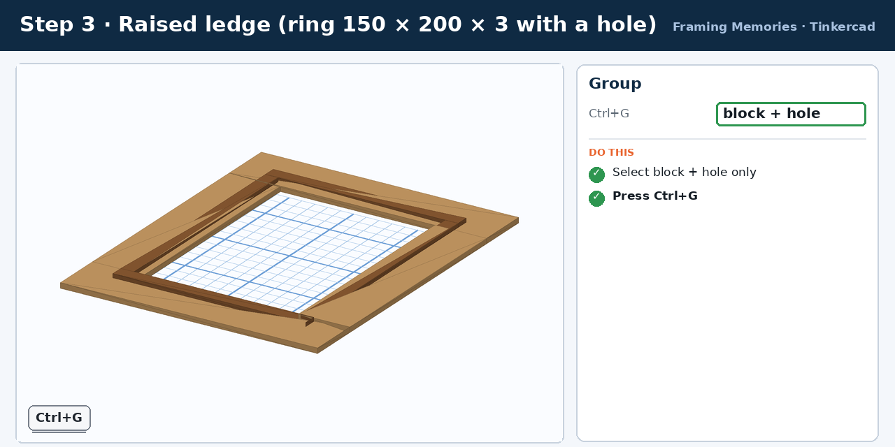
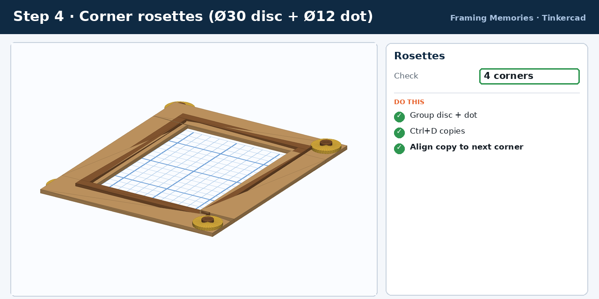
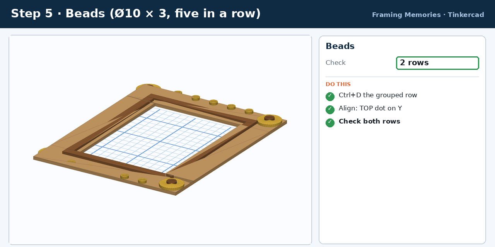
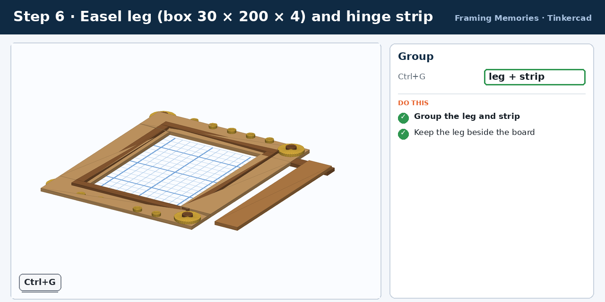
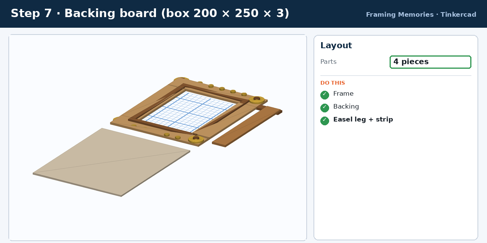
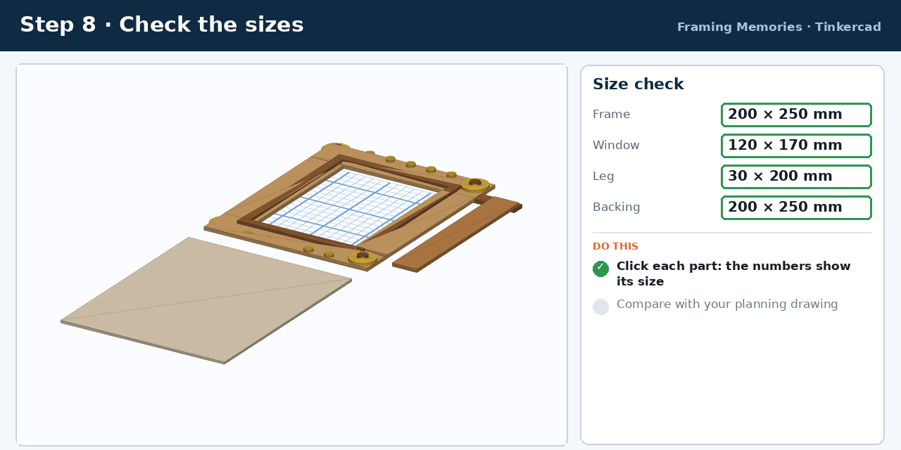

Watch the build
Video (3 min 24 s). An animated, step-by-step build of the whole frame. Pause with the space bar and rewatch any step. The animation is an illustration: your Tinkercad screen will look similar but not identical.
Written steps
The same steps as the video. Use them next to Tinkercad. Each step has an STL so you can compare your model.
Step 1 · Base board
Box 200 × 250 × 4. Everything sits on this MDF board.
- Shapes panel → Basic Shapes → drag a Box onto the workplane.
- Click the box. Type X = 200, Y = 250, Height = 4 (white squares, then Enter).
- Leave the bottom on the workplane (Z = 0).

Step 2 · Cut the window
Hole 120 × 170 × 10. A hole shape removes material where it overlaps.
- Drag a second Box. In its panel click Hole (it turns see-through).
- Type X = 120, Y = 170, Height = 10.
- Select the hole and the board (Shift+click) → Align (L) → click the middle dot on X and on Y.
- Keep both selected → Group (Ctrl+G).

Step 3 · Raised ledge
Box 150 × 200 × 3 + hole 130 × 180 × 6. A thin ring that stands up around the window.
- New Box: X 150, Y 200, Height 3. Click the black cone ▲ and type Z = 4. Align the middle dots with the board.
- New Box → Hole: X 130, Y 180, Height 6, Z = 3. Align the middle dots with the block.
- Select only the block and its hole (not the board) → Group.

Step 4 · Corner rosettes
Disc Ø30 × 3 and dot Ø12 × 3. Four decorations, one at each corner.
- Cylinder: X 30, Y 30, Height 3, Z = 4. In the panel set Sides = 32 so it looks round.
- Select the disc and the board → Align: choose the right dot on X and the top dot on Y (flush with the corner).
- Cylinder: X 12, Y 12, Height 3, Z = 7. Align its middle dots with the disc. Group disc + dot.
- Press Ctrl+D (duplicate). Select the copy and the board → Align to the next corner (left / top, left / bottom, right / bottom).

Step 5 · Rows of beads
Cylinder Ø10 × 3, five in a row. Repeating a small shape is quick with Duplicate.
- Cylinder: X 10, Y 10, Height 3, Z = 4, Sides 32.
- Select the bead and board → Align: middle dot on X, bottom dot on Y.
- Set the snap grid to 1.0 mm (bottom right). Tap the ← arrow key 50 times to move the bead to X = −50.
- Press Ctrl+D, then tap → 25 times. Press Ctrl+D three more times: Tinkercad repeats the same move.
- Select the five beads → Group. Press Ctrl+D, select the copy and board → Align: top dot on Y.

Step 6 · Easel leg
Box 30 × 200 × 4 + hinge strip 50 × 15 × 4. The leg lets the frame stand up. It is cut separately.
- Box: X 30, Y 200, Height 4. Move it beside the frame, about 15 mm to the right of the board. Align its middle dot on Y with the board.
- Box: X 50, Y 15, Height 4, Z = 4. Place it across the top end of the leg, centred on X.
- Select leg + strip → Group.

Step 7 · Backing board
Box 200 × 250 × 3. The back that holds the photo in place.
- Box: X 200, Y 250, Height 3.
- Move it below the frame. Select it and the board → Align the middle dot on X.

Step 8 · Check and export
Sizes and STL file. Always check before you save.
- Click each part and compare its numbers with your planning drawing.
- Rename the design (add your name).
- Click Export (top right) → .STL → download.
- Upload the STL and a screenshot to your teacher.

Cutting list for the real frame
| Part | Size (mm) | Qty | Real material |
|---|---|---|---|
| Frame board with window | 200 × 250 × 4 (window 120 × 170) | 1 | MDF |
| Raised ledge | 150 × 200 outer, 10 wide, 3 high | 1 | Card or thin MDF |
| Corner rosette | Ø30 × 3 + Ø12 × 3 | 4 | Bottle caps or card circles |
| Bead | Ø10 × 3 | 10 | Buttons or small caps |
| Easel leg | 30 × 200 × 4 | 1 | MDF or wood strip |
| Hinge strip | 50 × 15 × 4 | 1 | Card or tape hinge |
| Backing board | 200 × 250 × 3 | 1 | MDF or foam board |
If something goes wrong
| Problem | Fix |
|---|---|
| Shapes will not line up | Select both shapes first (Shift+click), then press L for Align. |
| The window did not cut | The hole must overlap the board and you must Group (Ctrl+G). |
| Everything is the wrong size | Check the units are millimetres and the snap grid is 1.0 mm. |
| A shape floats in the air | Click the black cone ▲ and type the right Z, or press D to drop it. |
| Circles look rough | Select the cylinder and set Sides to 32. |
| Arrow keys do not move it | Click the shape first, then use the arrow keys. |
Now make it your own
- Change the window shape (try a circle or hexagon).
- Change the corner rosettes to stars or hearts.
- Add a second ledge, or more rows of beads.
- Keep your sizes in millimetres and save often.